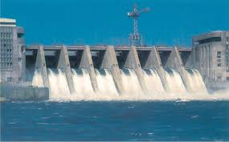
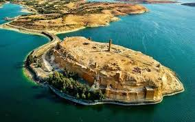
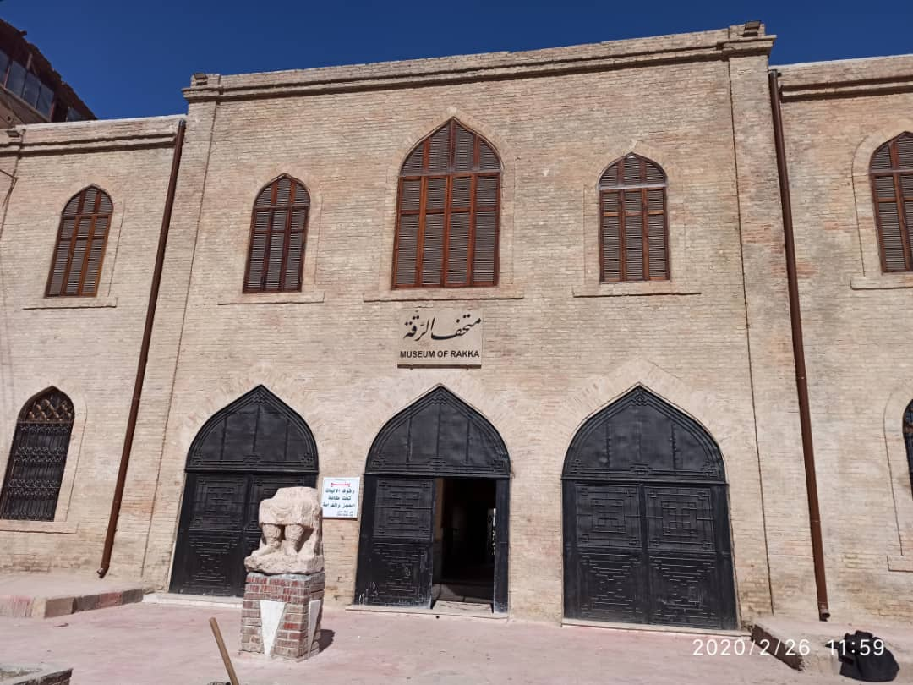

الرقة
الرقة، مدينة الفرات السوري، تقع على ضفاف نهر الفرات وتعتبر بوابة الصحراء السورية. كانت عاصمة للدولة العباسية في عصر هارون الرشيد. تشتهر بتراثها التاريخي وزراعة القطن والقمح، كما تضم سد الفرات أحد أهم المشاريع المائية في سوريا.
أبرز المعالم

سد الفرات
أكبر سد في سوريا، شيد عام 1973 ويوفر الكهرباء وري الأراضي الزراعية.

قلعة جعبر
قلعة أثرية تقع على ضفاف بحيرة الأسد، تعود للعصر السلجوقي.

المتحف الوطني
يضم آثاراً تعود لعصور مختلفة من تاريخ المنطقة الغني.